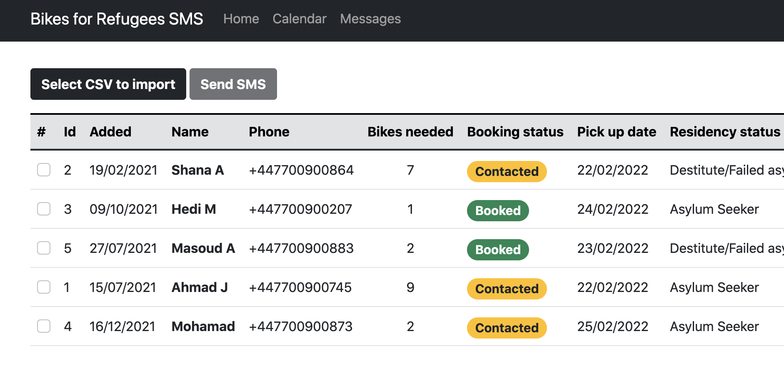

Background
Bikes for Refugees provides bikes to people from deprived backgrounds across Glasgow, not only refugees. People registered interest through a form on the charity's website — name, phone, living area — which fed into an Excel waiting list. With limited staff splitting time between bike repairs, paperwork, and admin, there was little time to work through that list. Waits of two months were typical; some people waited six months or more.
I was volunteering as a bike mechanic before I was the developer
Alongside the CodeYourFuture course, I was volunteering at Bikes for Refugees as a mechanic, fixing punctures and cleaning bikes. That's where I saw the waiting-list problem firsthand — a long Excel list with too few staff hours to work through it.
When our team sat down to choose a final project, the early ideas were generic, a to-do app, that kind of thing. I proposed we solve the real problem I'd seen at Bikes for Refugees instead. The team and our CodeYourFuture project supervisor agreed to take it on as a real client engagement rather than a mockup, we ended up the only team in our cohort building a working app for an actual organisation, which made it a genuinely harder challenge than the brief required.
I pitched the idea to the charity's manager and to Steven, the founder, who agreed to bring us on. Mike, the workshop manager in Glasgow, joined our weekly Zoom calls alongside our whole team and the CodeYourFuture supervisor. It was my first time using agile in practice, user stories, sprints, and stand-ups. Our supervisor taught us to use Miro to plan the project visually. Some of those early sessions were genuinely rough: nobody on the team had touched an API in production before.
Redesigning the booking flow together: once the core database was in place, I sketched the new SMS-and-booking-link process in Excalidraw and Miro with Mike, working through exactly how a bulk SMS, a unique booking link, and a status-tracked list could replace the 20-minute phone calls his team was making one by one.
A team sprint, then a solo promise kept
We built the foundation together as a team of three in four weeks. We graduated without a fully working product so I finished what I'd proposed, on my own time, after the course ended.
I owned
- Proposing the real-client project and securing the charity's agreement
- Designing the SMS + unique-booking-link redesign with Mike (Excalidraw, Miro)
- Finishing and deploying the app after graduation, kept my promise to the charity
- PostgreSQL schema, Express API, and AWS EC2 + RDS deployment
- Weekly iteration with Mike until the app was fully functional
- Handover of the finished project to new workshop administration
Houda Issa & Tara Quinn (Co-developers) / Mike & Steven (Client)
- Co-built the initial waiting-list page and React/Node scaffolding during the 4-week sprint
- Contributed to early user stories and feature planning
- Mike (Workshop Manager): domain expertise, weekly collaboration post-graduation
- Steven (Founder): approved the project and gave us access to a real client engagement
Learning agile on a real client, in real time
This was my first hands-on experience with agile: our CodeYourFuture supervisor ran the ceremonies — user stories, sprint planning, daily stand-ups — and taught the team to use Miro to plan the project visually. It wasn't smooth at first; several early sessions stalled because none of us had implemented an API before. That friction was part of the learning, and it shaped how carefully I planned requirements on later client projects.
Alongside Miro, Tara, Houda, our project advisor, and I tracked day-to-day progress on a shared Trello board — to-do, doing, done, visible to the whole CodeYourFuture team and our supervisor. That board was internal to the team rather than shared with Mike; his visibility into progress came through our weekly Zoom calls instead, since he wasn't working inside our sprint tooling.
What the system does
CSV upload → waiting list database
Client data collected through the charity's existing intake form is uploaded as a CSV and populates a PostgreSQL database, viewable as a waiting list table with live booking statuses — no change needed to how the charity already collected requests.


Bulk SMS booking invites
Starting from the waiting list ordered by date, staff select one person or hundreds and send a customisable SMS letting them know their bike is ready and it's time to book a collection — replacing one-by-one phone calls that took at least 20 minutes each and often hit language barriers.

Self-service booking page
Each SMS contains a unique link tied to that person. Tapping it opens a booking page showing available collection dates; once they choose one and submit, a confirmation SMS is sent automatically. The same link also lets someone decline the offer if they no longer need a bike.


Colour-coded status tracking
A status column shows, at a glance, whether someone has been contacted, booked a collection, declined, or simply hasn't responded yet — including whether the SMS itself was successfully delivered, using delivery data from the messaging API.

Two-week bookings view
A dedicated bookings page lists everyone due to collect a bike in the next two weeks, along with their contact details and how many bikes they need — giving staff a clear, printable view for the workshop floor.

Collection & delivery confirmation
When someone arrives to collect their bike, staff find them in the list, confirm they received the original SMS, hand over the bike, and mark it delivered. That single action triggers a final confirmation SMS, removes them from the active bookings list, and updates their waiting-list status to delivered.


How it's built
Manual phone calls took at least 20 minutes each, hit language barriers, and often went unanswered. Replacing that with a bulk SMS containing a unique booking link per person let staff message one person or hundreds at once, while still tracking individual delivery, response, and booking status.
Rather than replacing the charity's existing website intake form, I added a simple CSV upload step to populate PostgreSQL — minimising disruption to a process that already worked for collecting requests.
The four-week course timeline wasn't enough to ship a fully working product, and none of us had built against a real API before this project. Rather than leave the charity with an unfinished tool, I kept working with Mike on a weekly basis after graduation until the app was genuinely functional — the PERN stack (PostgreSQL, Express, React, Node) stayed the same throughout, deployed on AWS EC2 with RDS.
What changed
The app helped Bikes for Refugees deliver 500 bikes with the app and 2000 by the end of 2022 a result of the charity's staff and workshop team, made significantly easier by removing manual booking calls from their day.
What I'd do differently
Four weeks wasn't enough to scope and ship a fully working product with a team that had never built against a real API before, I'd plan a smaller, guaranteed-to-ship MVP for the course deadline next time, with the fuller vision as a clearly separated phase two. I also learned the risk of a project depending on one champion at the client: when Mike left, I made sure to hand over documentation so the new administration could keep running the app without me.